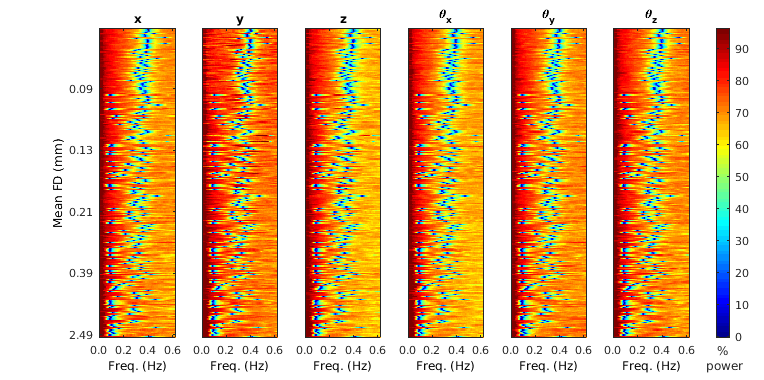
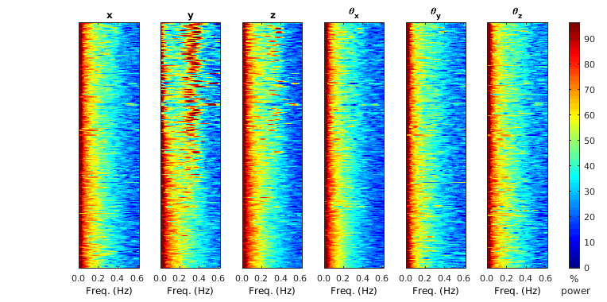
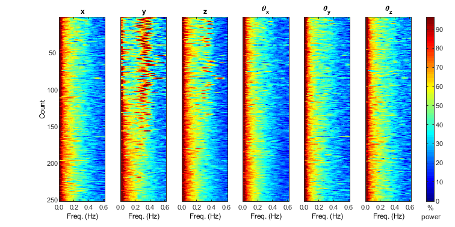
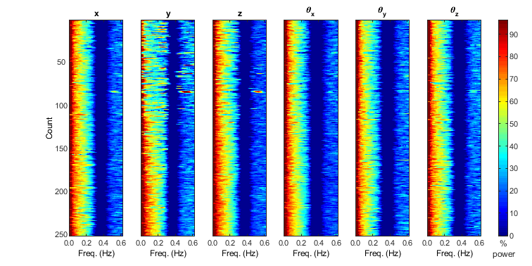

To run cat_mov_reg_power.m
Contents
Credit and date
Code developed by Oscar Miranda-Dominguez.
Intro
This function concatenate the relative contribution of power of each frequency band from multiple subjects.
Dependencies:
Before using it, make sure you have the functions this code needs:
- importMovReg_patch.m | in rushmore: /mnt/max/shared/projects/filtering_movement_regressors/matlab_code/importMovReg_patch.m
- calc_FD_HCP.m | in rushmore: /mnt/max/shared/code/internal/utilities/framewise_displacement/calc_FD_HCP.m
- cat_mov_reg_power.m | in rushmore: /mnt/max/shared/code/internal/utilities/mov_reg_power/cat_mov_reg_power.m
- make_friston_regressors | in rushmore: /mnt/max/shared/utilities/HCP_Matlab/make_friston_regressors.m
Basic usage
The two mandatory input arguments for this function are:
- the path to the Movement Regressors files made by the pipeline, formatted as a cell of size nx1, where n represents the number of files
- TR, BOLD's repetition time
Example 1
To run this example, you need to have the movement regressors files used for the power analysis. We are including in this documentation Movement regressors files from 63 participants with 4 resting state scans each. Hence we have 252 (63x4=252) Movement regressors files. Furthermore, the data was processed using 3 different methods, or versions:
- ver1: No filtering
- ver2: applying a notch filter with fixed cutting frequencies located at 0.31 and 0.43 HZ to the estimations of head movement (Movement regressors files)
- ver3: applying a notch filter to the estimations of head movement but selecting the filter bandwidth based on "guesing" the participant's respiration rate.
The movement regressors files for the 3 versions are saved on the folders ver1, ver2, and ver3. The files paths_v1_native_folder.mat, paths_v2_native_folder.mat, and paths_v3_native_folder.mat have the paths to those files. You might need to update those paths accordingly to the location of the files in your system
Here is the first example:
Adding paths | Update this accordingly to your system
addpath('/mnt/max/shared/code/internal/utilities/framewise_displacement/'); addpath('/mnt/max/shared/code/internal/utilities/mov_reg_power/'); addpath('/mnt/max/shared/projects/filtering_movement_regressors/matlab_code/'); addpath('/mnt/max/shared/utilities/HCP_Matlab/'); % cd /mnt/max/shared/code/internal/utilities/mov_reg_power % move to the folder to save the data f=filesep; TR=0.8;% TR in seconds ver=1; filename=['paths_v' num2str(ver) '_local_folder.mat']; load(filename) [CLIM, ix_subject_scan,MU,SIGMA,P]=cat_mov_reg_power(paths,TR);
This figure shows the power spectrum of the 252 unique scans, sorted by mean frame displacement. Each subplot indicates the direction of the displacement
Advanced usage, matching the colormap for different filtering strategies
If you like to use the same colormap and scaling using from one filtering strategy on the other filtering versions, you need to run the function first using the oputput arguments of the function and then run the function again using those output arguments as input arguments
Run the loop for the first time to pick the scale
CLIM=zeros(3,6,2); IX=cell(3,1); MU=cell(3,1); SIGMA=cell(3,1); P=cell(3,1); for ver=1:3 filename=['paths_v' num2str(ver) '_local_folder.mat']; load(filename) tit_preffix=['FNL_ver' num2str(ver) '_autoscale_']; [CLIM(ver,:,:), IX{ver},MU{ver},SIGMA{ver},P{ver}]=cat_mov_reg_power(paths,0.8,'tit_preffix',tit_preffix); end
Re run the loop selecting your prefered color
pick=1; same_CLIM=squeeze(CLIM(pick,:,:)); for ver=1:3 filename=['paths_v' num2str(ver) '_local_folder.mat']; load(filename) tit_preffix=['FNL_ver' num2str(ver) '_same_scale_as_Ver1_']; ix=IX{pick}; mu=MU{pick}; sigma=SIGMA{pick}; p=P{pick}; cat_mov_reg_power(paths,0.8,... 'tit_preffix',tit_preffix,... 'clim',same_CLIM,... 'ix_subject_scan',ix,... 'MU',mu,... 'SIGMA',sigma,... 'P',p); end  